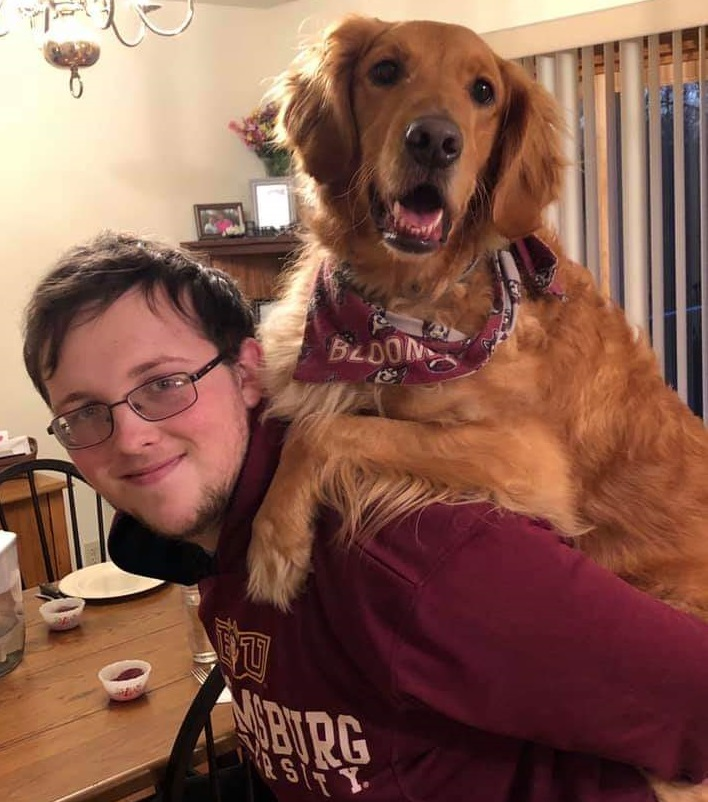
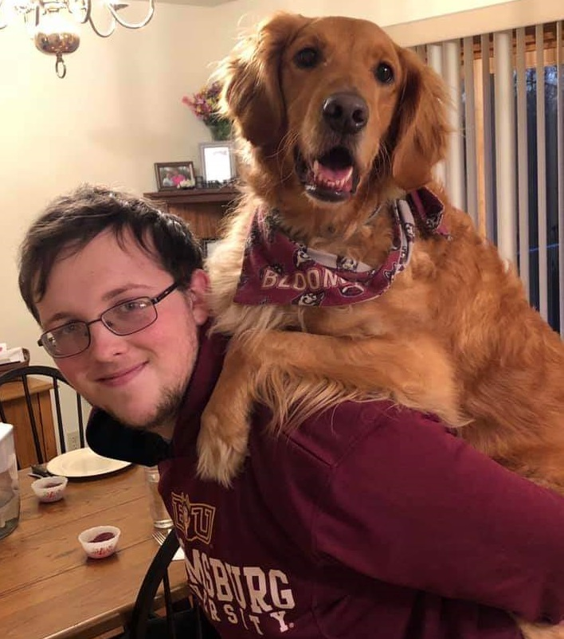
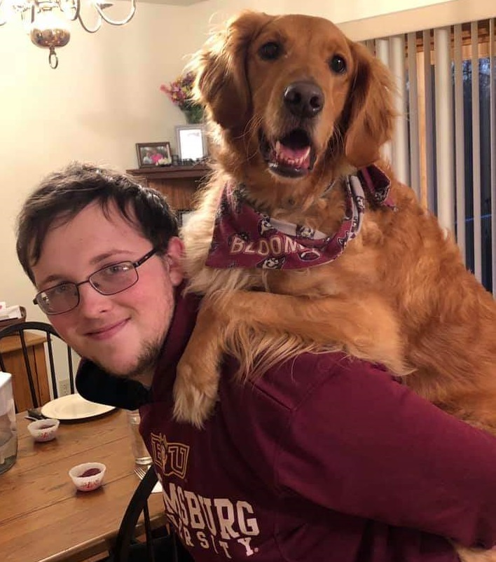
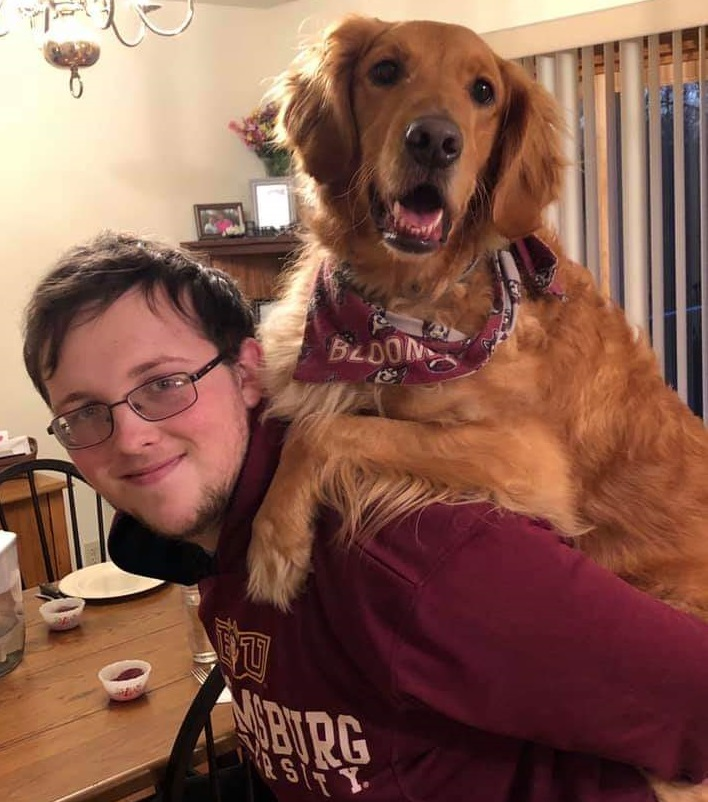

My name is Brady Snyder and I'm a computer science major at Bloomsburg University. I grew up in the small town of Gordon, Pennsylvania I've been interested in computer programming and hardware for as long as I can remember and this field was a perfect choice for me. I enjoy both software and hardware with particular interests in web and app development, creating things that can be interacted with and used by any user. Along with an interest electrical engineering and circuitry. Throughout High School and college I have gained experience in many languages; Java, HTML, JavaScript, C++, SQL, and Visual Basic. I've been involved with many clubs related to CompSci, including Vice-President of the Creative Tech Club in High School and the Association for Computing Machinery in college.